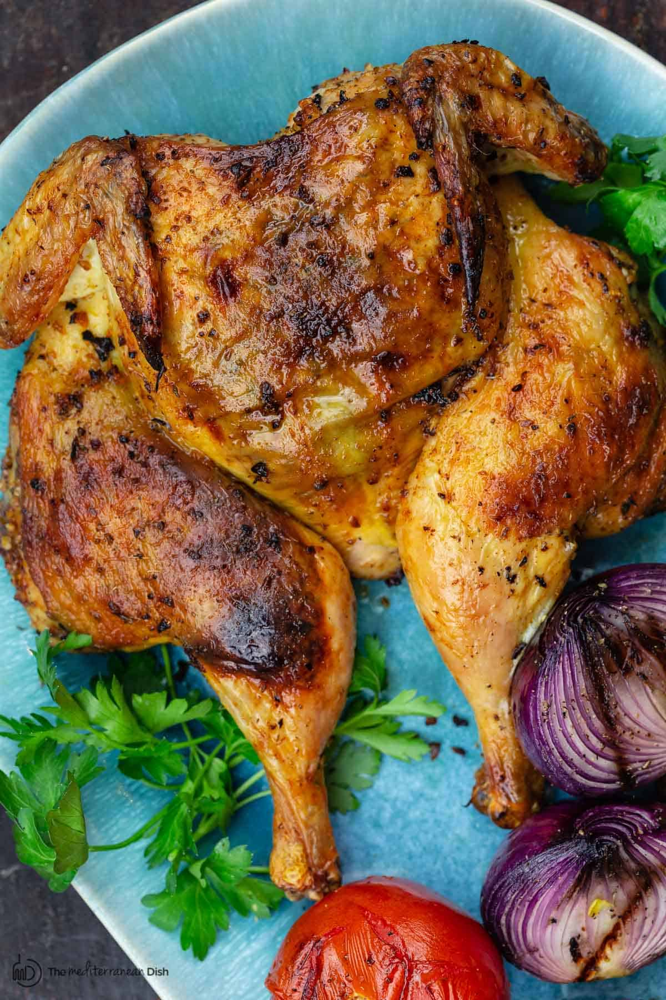

Roast Chicken

Description
Learning how to properly roast a chicken at home is the key to a variety of delicious and cost-effective meals.
A technique called spatchcocking will ensure that the bird cooks evenly, and a simple dry-brine of salt
and sugar is all that is needed to inject flavor.
Ingredients
- Whole raw chicken; 3-5lbs
- Mayonnaise (Duke's or Hellman's)
- Dijon Mustard
- Roasting Herbs (Thyme, Rosemary, Sage
- Kosher Salt & Pepper
Steps
- Using kitchen shears, cut the spine out of the back of the bird. Flip over and gently press to crack the breastplate.
- Place the bird skin-side down on a sheet with a wire rack. Season generously with salt, sparingly with sugar, then set aside for at least 4 hours (up to 24)
- Stir together 1/2 cup of mayo with 1 tbsp of dijon mustard.
- Once time has passed, wash off bird and pat dry with a towel. Place back on sheet with wire rack, skin-side up this time. Rub bird with mayo/dijon mixture, making sure to
cover entirely. Season with more salt and pepper, and add roasting herbs to tray.
- Roast bird in oven at 450 degrees, until it reaches an internal temp of 155-165f. Let cool 20 minutes before serving.